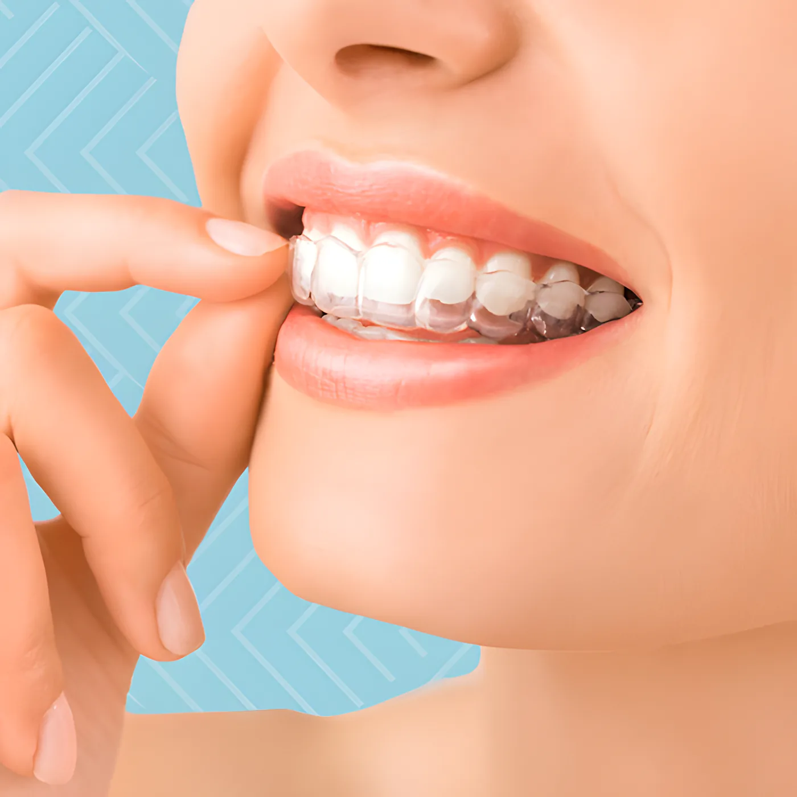

Home / Treatments
Treatments under one roof
Ten areas of dentistry across our three branches, with laser used wherever it makes the treatment easier on you. Tap a treatment for what's included, then call the branch nearest you.
All treatments
01Laser dentistryFillings, gum treatment and cosmetic work with laser
Dr. Lamya's was one of the first clinics to bring laser treatment to Bahrain. Laser is a minimally invasive option when you are facing gum surgery, a cavity or other problems in the mouth, and it is used for preventing decay, whitening, removing and curing fillings and preparing cavities.
We do with laser
- Laser cavity preparation (fillings)
- Laser gum treatment, non-surgical
- Laser cosmetic treatment
- Laser snoring treatment (Elexxion Snore-3)
02Cosmetic dentistryWhitening and veneers
A team of specialists and assistants, with high standards of lab work, for anything from a small change to a full smile makeover.
Procedures
- Teeth whitening
- Porcelain veneers
- Porcelain Lumineers
- Composite veneers
03Orthodontics and InvisalignFixed braces, removable aligners, Invisalign
Straightening teeth improves how they look and how they work, and spreads the biting pressure evenly to protect teeth, gums and jaw joints. A specialist orthodontist, trained assistants and lab technicians work on each case. Dr. Adina Basharat is a certified Invisalign dentist.

Fixed
- Clear braces
- Diamond braces
- Conventional braces
Removable
- Quick Straight Teeth
- Invisalign clear aligners
04Dental implantsReplacing missing teeth with titanium implants
An implant is a titanium post placed in the jawbone under the gum. Once it has settled, a replacement tooth is fixed on top, designed to blend in with your own teeth. We use computer-guided implants and the Implantmed surgical unit.
Options
- Conventional implant
- Immediate implant
- Punch-technique implant
05Restorative dentistryRepairing worn, decayed or damaged teeth
Repairing worn, decayed, damaged or missing teeth with the right technique for each case. Crowns and bridges are milled precisely on our Ceramill Motion 2 from digital impressions taken with the TRIOS scanner.
Treatments
- Inlays, onlays and veneers
- Porcelain crowns and fixed bridges
- Root canal therapy
06Prosthetic dentistryReplacing missing teeth
Restoring and replacing missing teeth so they look right and work the way they should.
Treatments
- Crowns and bridges
- Full or partial dentures
- Implants
07General dentistryCheck-ups, cleaning, fillings, extractions
Prevention, diagnosis and treatment for the whole mouth, and keeping your teeth working and looking well, with digital x-rays and intra-oral cameras.
Services
- Complete exams, x-rays and cleaning
- Fillings, root canals and extractions
- Whitening, porcelain and composite veneers
- Crowns, bridges, full and partial dentures
- Gum (periodontal) therapy
- Nutritional counselling
08Preventive dentistryKeeping teeth healthy before problems start
Caring for your teeth now to avoid cavities, gum disease and enamel wear later. Cleaning is done with the EMS Airflow One for guided biofilm therapy, with less scraping by hand.
Procedures
- Hygiene instruction
- Scaling and polishing
- Fluoride application
- Fissure sealant
- Night guard
09Children's dentistryFrom the first tooth through the teenage years
The first visit should be within six months of the first tooth, or by the first birthday. Dr. Nooran Waleed, our paediatric specialist, checks early and catches decay at the start, so treatment stays simple. She is a certified nitrous oxide provider for anxious patients.
Treatments
- Early oral examination
- Fillings
- Space maintainers
- Children's sedation
10Oral surgeryWisdom teeth, polyps, impacted teeth
Surgical treatment of the teeth and surrounding jaw bone by our experienced dental surgeons, done quickly and efficiently to make it as easy as possible for you.
Procedures
- Wisdom tooth extraction
- Excision of polyps
- Surgical exposure of impacted teeth
The equipment behind it
Our centers carry the largest number of laser systems in the country, plus digital x-ray, intra-oral cameras, digital endodontic devices, microscopes and computer-guided implants.
- 01
Fotona LightWalker AT
The highest-performance LightWalker, for a wide range of hard- and soft-tissue treatments.
- 02
Waterlase iPlus
A minimally invasive all-tissue laser, for high precision with minimal pain and discomfort.
- 03
Biolase Epic 10 diode laser
Dental surgery, pain relief, faster healing, and whitening in as little as 20 minutes of chair time.
- 04
Elexxion Claros Nano
Surgery, implants, root canal and gum pocket disinfection, whitening, TMJ disorders, wound healing.
- 05
Elexxion Snore-3
A non-invasive laser treatment for snoring: more room for air to flow at night. About 20 minutes a session.
- 06
TRIOS intra-oral scanner
Digital impressions instead of the tray of paste: more comfortable and more accurate.
- 07
Ceramill Motion 2
Wet and dry milling in one unit for precise crowns and other restorations.
- 08
Ruiwan RD90 aerosol suction
Filters 99.99% of aerosols and droplets, with a UV disinfection filter, to keep the room clean for patients and staff.
- 09
Implantmed and Airflow One
Implantmed for precise implant surgery; EMS Airflow One for guided biofilm cleaning.
- 10
Nitrous oxide
For managing pain and anxiety during treatment, given by certified providers.